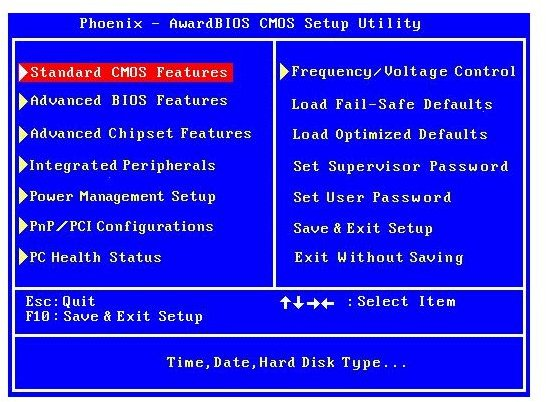

BIOS:
Como que se parece uma BIOS:
E sim eu tive que pegar uma imagem mais antiga, afinal é só um exemplo:

Eu sei que a BIOS não é uma parte do computador que faz parte do hardware, mas,
ela não pode ficar de fora, afinal ela que permite você fazer boot de um sistema
operacional, tipo o Basic Input/Output System ou conhecido como BIOS é um pequeno
programa que fica gravado na placa mãe do computador e sim ele vem de fábrica e
fica armazenado em um chip de memória e bem... O BIOS em computadores mais modernos
foi substituído em grande parte pela UEFI que é uma versão avançada do BIOS tradicional
e bem... O que o BIOS faz? Ele liga e testa o hardware, reconhece dispositivos como
HD ou SSD, placa mãe, memória RAM e etc (Principalmente dispositivos de armazenamento externos
como: Pen drive, CD ou DVD e até Disquete) e claro ele inicia um sistema operacional (Na parte de
Boot)